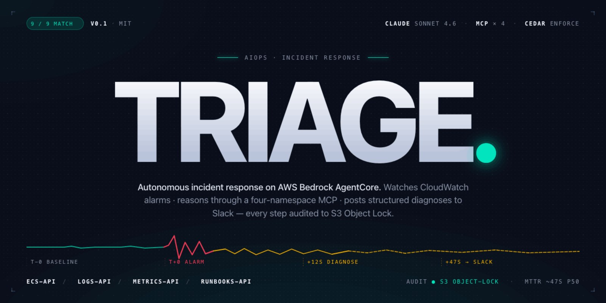

01
Triage — autonomous incident response on AWS
Bedrock AgentCore · MCP · Cedar · evals 9/9
Triage — autonomous incident response on AWS
Bedrock AgentCore · MCP · Cedar · evals 9/9
An AIOps agent on AWS Bedrock AgentCore: it watches CloudWatch alarms, investigates failures through a four-namespace custom MCP server (six tools), and posts structured diagnoses to Slack. Write actions pass through Cedar policies at the AgentCore Gateway — six active policies — and every reasoning step and tool call lands in an immutable S3 Object Lock audit journal.
Evaluated, not just demoed: a nine-scenario outage corpus — four AWS Fault Injection Service experiments and five deliberate Terraform misconfigurations — scored by AgentCore Evaluations with five built-in evaluators and three custom LLM-as-judge evaluators, including a MAST failure-taxonomy classifier. The most recent run of every scenario scores Match: 9 for 9, a bar reached through iteration — across 31 runs, the eval pipeline caught real bugs in both the infrastructure and the agent's reasoning.
My favorite of those bugs: scenario 03, an AZ slowdown, took four runs to pass.
The agent first skipped its inspection tools entirely (NoMatch), then hit a missing
logs:FilterLogEvents IAM permission (Partial), then read the heartbeat
logs in the wrong direction (Partial) — then Match.
Terraform 1.14 · Python 3.12 · custom MCP server · Cedar · OpenTelemetry · portfolio project, evaluated against a deliberate outage corpus · source & architecture →
02
Infrastructure
Terraform multi-AZ VPC · CI/CD with OIDC
Infrastructure
Terraform multi-AZ VPC · CI/CD with OIDCTerraform multi-AZ VPC
A production-style VPC module: four subnets across two availability zones, internet gateway, multi-AZ NAT, custom route tables, and layered security groups — 18 resources per deployment, with remote state in S3 and DynamoDB locking. Validated with EC2 test instances exercising the public→internet, private→NAT, and bastion traffic paths.
CI/CD: GitHub Actions → ECR → ECS Fargate
An end-to-end pipeline: lint → test → build → push to ECR → deploy to ECS Fargate, authenticated via OIDC — no long-lived AWS keys in GitHub. Multi-stage Dockerfile with a non-root user and healthcheck-gated startup.
both in devops-learning · this site runs the same way: S3 + CloudFront, Terraform-provisioned, OIDC-deployed — source
03
Data engineering
Python ETL · NLP standardization · reconciliation
Data engineering
Python ETL · NLP standardization · reconciliationAs an operations analyst at Il Mulino, a New York restaurant group (2023–2025), I ran into a blunt data problem: every location named its dishes differently, so franchise-level, per-dish sales analysis was impossible. I built a Python pipeline (BeautifulSoup, Selenium, sentence-transformers, scikit-learn TF-IDF) that standardized the nomenclature across locations into a unified master sales sheet.
The legacy POS had no API — I prototyped GUI screen-mapping automation first, then pivoted to a separate ingestion-and-standardization pipeline. I presented the result to the CEO and the Director of Finance not as a standardization tool but as the franchise-wide per-dish sales picture they could now investigate — and they agreed to make the reports recurring. Alongside it: monthly reconciliation of multi-location Excel sales exports against POS records, with cleansing and validation before anything reached accounting.
04
About
BBA economics · 60-day sprint · EN/SR
About
BBA economics · 60-day sprint · EN/SRBased in New York, NY — open to relocation. BBA in Economics from Baruch College, CUNY (2023), with a minor in political science. Two years as an operations analyst in New York, then a self-directed 60-day sprint from Linux fundamentals through Terraform and CI/CD to the eval-driven Triage capstone.
Looking for early-career cloud/DevOps and data roles. Native English and Serbian. The fastest way to reach me is email.